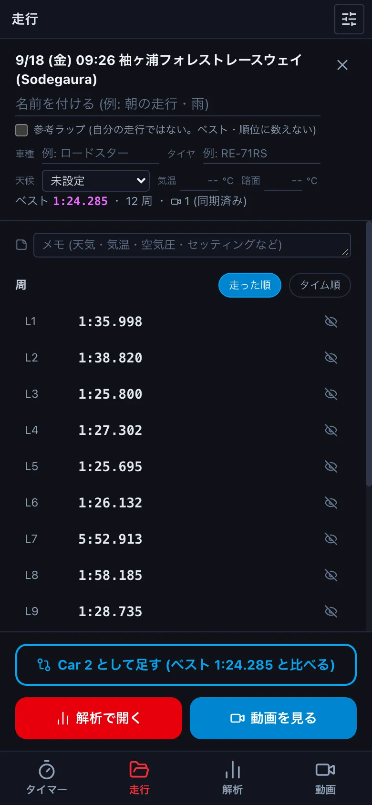
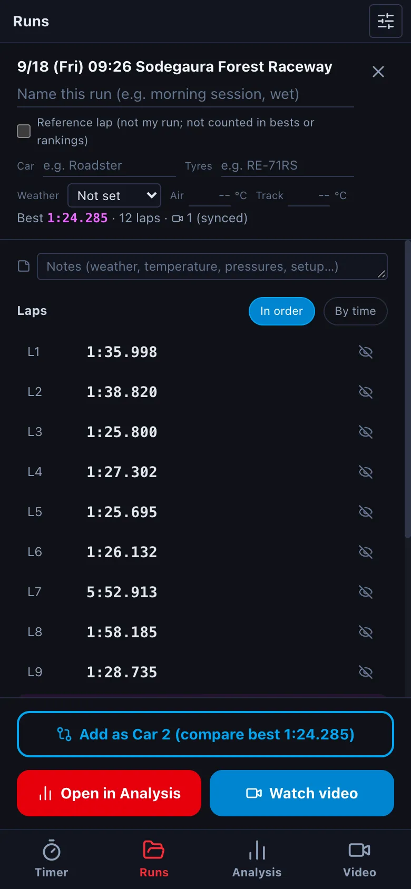
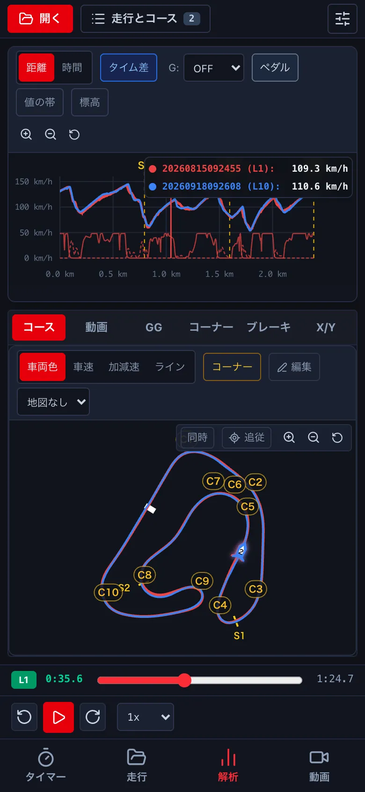
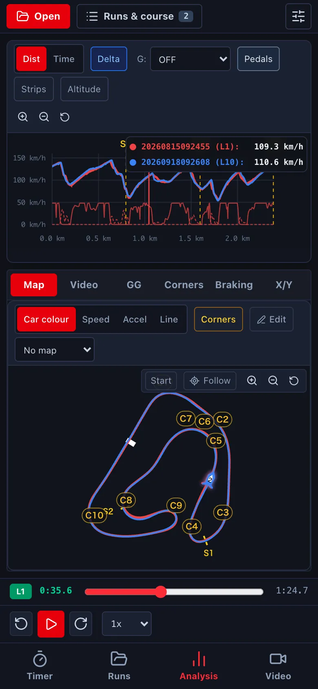
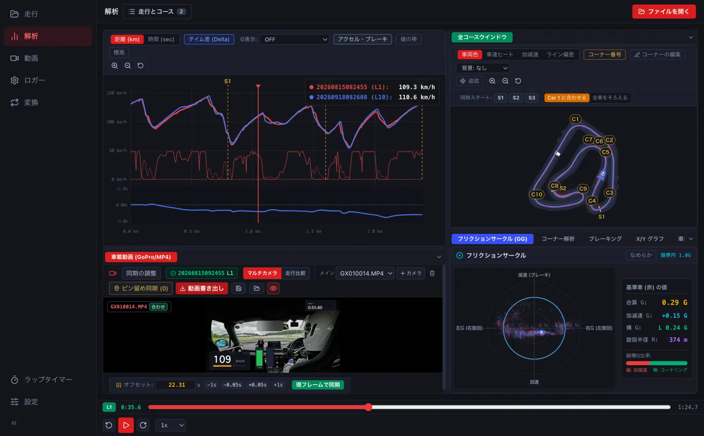
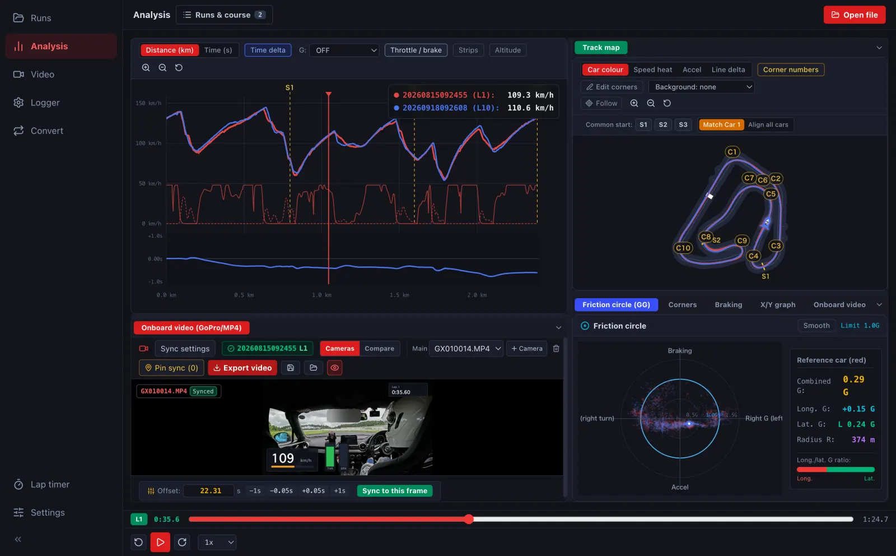

2 つの周を比べるComparing two laps
別の日の走行や、同じ走行の別の周を重ねて、どこで差がついたかを見ます。Car 1〜4 の 4 台まで重ねられます。Overlay a lap from another day, or another lap of the same run, to see where the time went. Up to four cars (Car 1–4).
-
走行を開いたまま、走行 で同じコースの別の走行を押し、Car 2 として足す を押します (その走行のベストと比べます)。With a run open, open another run on the same course in Runs and press Add as Car 2 (it compares with that run's best).


- 2 つのログを ファイルを開く で開き、走行とコース で Car 1・Car 2 に周を割り当てます。Open both logs with Open file and assign laps to Car 1 and Car 2 in Runs & course.
-
速度のグラフに 2 本の線が重なり、下にタイム差のグラフが出ます。線が上にあるところほど、Car 1 (赤) が先を走っています。コースマップには Car 2 の位置も出ます。The speed graph shows both lines and a time-delta graph appears below; where it is above zero, Car 1 (red) is ahead. Car 2 also appears on the course map.




- 同じ走行のほかの周と比べるときは、走行とコース の Car 2〜4 に周を割り当てます。To compare with other laps of the same run, assign them to Car 2–4 in Runs & course.
- 天候やタイヤをそろえて比べたいときは、先に走行の一覧を絞ってから選びます (→ C2)。To compare like with like, filter the run list by weather or tyres first (→ C2).